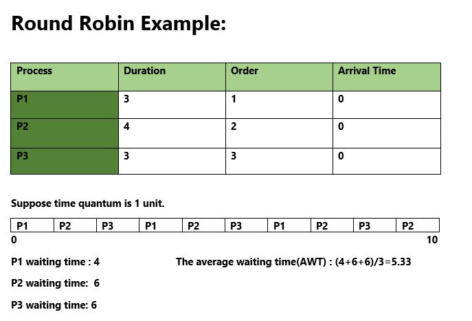

Round Robin is a CPU scheduling algorithm where each process is assigned a fixed time slot in a cyclic way.
- It is simple, easy to implement, and starvation-free as all processes get fair share of CPU.
- One of the most commonly used technique in CPU scheduling as a core.
- It is preemptive as processes are assigned CPU only for a fixed slice of time at most.
- The disadvantage of it is more overhead of context switching.
Illustration:

How to compute below times in Round Robin using a program?
- Completion Time: Time at which process completes its execution.
- Turn Around Time: Time Difference between completion time and arrival time. Turn Around Time = Completion Time – Arrival Time
- Waiting Time(W.T): Time Difference between turn around time and burst time.
Waiting Time = Turn Around Time – Burst Time
In this post, we have assumed arrival times as 0, so turn around and completion times are same.
The tricky part is to compute waiting times. Once waiting times are computed, turn around times can be quickly computed.
Steps to find waiting times of all processes:
1- Create an array rem_bt[] to keep track of remaining
burst time of processes. This array is initially a
copy of bt[] (burst times array)
2- Create another array wt[] to store waiting times
of processes. Initialize this array as 0.
3- Initialize time : t = 0
4- Keep traversing the all processes while all processes
are not done. Do following for i'th process if it is
not done yet.
a- If rem_bt[i] > quantum
(i) t = t + quantum
(ii) bt_rem[i] -= quantum;
c- Else // Last cycle for this process
(i) t = t + bt_rem[i];
(ii) wt[i] = t - bt[i]
(ii) bt_rem[i] = 0; // This process is over
Once we have waiting times, we can compute turn around time tat[i] of a process as sum of waiting and burst times, i.e., wt[i] + bt[i]
Below is implementation of above steps.
C/C++
// C++ program for implementation of RR scheduling
#include<iostream>
using namespace std;
// Function to find the waiting time for all
// processes
void findWaitingTime(int processes[], int n,
int bt[], int wt[], int quantum)
{
// Make a copy of burst times bt[] to store remaining
// burst times.
int rem_bt[n];
for (int i = 0 ; i < n ; i++)
rem_bt[i] = bt[i];
int t = 0; // Current time
// Keep traversing processes in round robin manner
// until all of them are not done.
while (1)
{
bool done = true;
// Traverse all processes one by one repeatedly
for (int i = 0 ; i < n; i++)
{
// If burst time of a process is greater than 0
// then only need to process further
if (rem_bt[i] > 0)
{
done = false; // There is a pending process
if (rem_bt[i] > quantum)
{
// Increase the value of t i.e. shows
// how much time a process has been processed
t += quantum;
// Decrease the burst_time of current process
// by quantum
rem_bt[i] -= quantum;
}
// If burst time is smaller than or equal to
// quantum. Last cycle for this process
else
{
// Increase the value of t i.e. shows
// how much time a process has been processed
t = t + rem_bt[i];
// Waiting time is current time minus time
// used by this process
wt[i] = t - bt[i];
// As the process gets fully executed
// make its remaining burst time = 0
rem_bt[i] = 0;
}
}
}
// If all processes are done
if (done == true)
break;
}
}
// Function to calculate turn around time
void findTurnAroundTime(int processes[], int n,
int bt[], int wt[], int tat[])
{
// calculating turnaround time by adding
// bt[i] + wt[i]
for (int i = 0; i < n ; i++)
tat[i] = bt[i] + wt[i];
}
// Function to calculate average time
void findavgTime(int processes[], int n, int bt[],
int quantum)
{
int wt[n], tat[n], total_wt = 0, total_tat = 0;
// Function to find waiting time of all processes
findWaitingTime(processes, n, bt, wt, quantum);
// Function to find turn around time for all processes
findTurnAroundTime(processes, n, bt, wt, tat);
// Display processes along with all details
cout << "Processes "<< " Burst time "
<< " Waiting time " << " Turn around time\n";
// Calculate total waiting time and total turn
// around time
for (int i=0; i<n; i++)
{
total_wt = total_wt + wt[i];
total_tat = total_tat + tat[i];
cout << " " << i+1 << "\t\t" << bt[i] <<"\t "
<< wt[i] <<"\t\t " << tat[i] <<endl;
}
cout << "Average waiting time = "
<< (float)total_wt / (float)n;
cout << "\nAverage turn around time = "
<< (float)total_tat / (float)n;
}
// Driver code
int main()
{
// process id's
int processes[] = { 1, 2, 3};
int n = sizeof processes / sizeof processes[0];
// Burst time of all processes
int burst_time[] = {10, 5, 8};
// Time quantum
int quantum = 2;
findavgTime(processes, n, burst_time, quantum);
return 0;
}
Java
// Java program for implementation of RR scheduling
public class GFG
{
// Method to find the waiting time for all
// processes
static void findWaitingTime(int processes[], int n,
int bt[], int wt[], int quantum)
{
// Make a copy of burst times bt[] to store remaining
// burst times.
int rem_bt[] = new int[n];
for (int i = 0 ; i < n ; i++)
rem_bt[i] = bt[i];
int t = 0; // Current time
// Keep traversing processes in round robin manner
// until all of them are not done.
while(true)
{
boolean done = true;
// Traverse all processes one by one repeatedly
for (int i = 0 ; i < n; i++)
{
// If burst time of a process is greater than 0
// then only need to process further
if (rem_bt[i] > 0)
{
done = false; // There is a pending process
if (rem_bt[i] > quantum)
{
// Increase the value of t i.e. shows
// how much time a process has been processed
t += quantum;
// Decrease the burst_time of current process
// by quantum
rem_bt[i] -= quantum;
}
// If burst time is smaller than or equal to
// quantum. Last cycle for this process
else
{
// Increase the value of t i.e. shows
// how much time a process has been processed
t = t + rem_bt[i];
// Waiting time is current time minus time
// used by this process
wt[i] = t - bt[i];
// As the process gets fully executed
// make its remaining burst time = 0
rem_bt[i] = 0;
}
}
}
// If all processes are done
if (done == true)
break;
}
}
// Method to calculate turn around time
static void findTurnAroundTime(int processes[], int n,
int bt[], int wt[], int tat[])
{
// calculating turnaround time by adding
// bt[i] + wt[i]
for (int i = 0; i < n ; i++)
tat[i] = bt[i] + wt[i];
}
// Method to calculate average time
static void findavgTime(int processes[], int n, int bt[],
int quantum)
{
int wt[] = new int[n], tat[] = new int[n];
int total_wt = 0, total_tat = 0;
// Function to find waiting time of all processes
findWaitingTime(processes, n, bt, wt, quantum);
// Function to find turn around time for all processes
findTurnAroundTime(processes, n, bt, wt, tat);
// Display processes along with all details
System.out.println("Processes " + " Burst time " +
" Waiting time " + " Turn around time");
// Calculate total waiting time and total turn
// around time
for (int i=0; i<n; i++)
{
total_wt = total_wt + wt[i];
total_tat = total_tat + tat[i];
System.out.println(" " + (i+1) + "\t\t" + bt[i] +"\t " +
wt[i] +"\t\t " + tat[i]);
}
System.out.println("Average waiting time = " +
(float)total_wt / (float)n);
System.out.println("Average turn around time = " +
(float)total_tat / (float)n);
}
// Driver Method
public static void main(String[] args)
{
// process id's
int processes[] = { 1, 2, 3};
int n = processes.length;
// Burst time of all processes
int burst_time[] = {10, 5, 8};
// Time quantum
int quantum = 2;
findavgTime(processes, n, burst_time, quantum);
}
}
C#
// C# program for implementation of RR
// scheduling
using System;
public class GFG {
// Method to find the waiting time
// for all processes
static void findWaitingTime(int []processes,
int n, int []bt, int []wt, int quantum)
{
// Make a copy of burst times bt[] to
// store remaining burst times.
int []rem_bt = new int[n];
for (int i = 0 ; i < n ; i++)
rem_bt[i] = bt[i];
int t = 0; // Current time
// Keep traversing processes in round
// robin manner until all of them are
// not done.
while(true)
{
bool done = true;
// Traverse all processes one by
// one repeatedly
for (int i = 0 ; i < n; i++)
{
// If burst time of a process
// is greater than 0 then only
// need to process further
if (rem_bt[i] > 0)
{
// There is a pending process
done = false;
if (rem_bt[i] > quantum)
{
// Increase the value of t i.e.
// shows how much time a process
// has been processed
t += quantum;
// Decrease the burst_time of
// current process by quantum
rem_bt[i] -= quantum;
}
// If burst time is smaller than
// or equal to quantum. Last cycle
// for this process
else
{
// Increase the value of t i.e.
// shows how much time a process
// has been processed
t = t + rem_bt[i];
// Waiting time is current
// time minus time used by
// this process
wt[i] = t - bt[i];
// As the process gets fully
// executed make its remaining
// burst time = 0
rem_bt[i] = 0;
}
}
}
// If all processes are done
if (done == true)
break;
}
}
// Method to calculate turn around time
static void findTurnAroundTime(int []processes,
int n, int []bt, int []wt, int []tat)
{
// calculating turnaround time by adding
// bt[i] + wt[i]
for (int i = 0; i < n ; i++)
tat[i] = bt[i] + wt[i];
}
// Method to calculate average time
static void findavgTime(int []processes, int n,
int []bt, int quantum)
{
int []wt = new int[n];
int []tat = new int[n];
int total_wt = 0, total_tat = 0;
// Function to find waiting time of
// all processes
findWaitingTime(processes, n, bt, wt, quantum);
// Function to find turn around time
// for all processes
findTurnAroundTime(processes, n, bt, wt, tat);
// Display processes along with
// all details
Console.WriteLine("Processes " + " Burst time " +
" Waiting time " + " Turn around time");
// Calculate total waiting time and total turn
// around time
for (int i = 0; i < n; i++)
{
total_wt = total_wt + wt[i];
total_tat = total_tat + tat[i];
Console.WriteLine(" " + (i+1) + "\t\t" + bt[i]
+ "\t " + wt[i] +"\t\t " + tat[i]);
}
Console.WriteLine("Average waiting time = " +
(float)total_wt / (float)n);
Console.Write("Average turn around time = " +
(float)total_tat / (float)n);
}
// Driver Method
public static void Main()
{
// process id's
int []processes = { 1, 2, 3};
int n = processes.Length;
// Burst time of all processes
int []burst_time = {10, 5, 8};
// Time quantum
int quantum = 2;
findavgTime(processes, n, burst_time, quantum);
}
}
// This code is contributed by nitin mittal.
Output:
Processes Burst time Waiting time Turn around time 1 10 13 23 2 5 10 15 3 8 13 21 Average waiting time = 12 Average turn around time = 19.6667